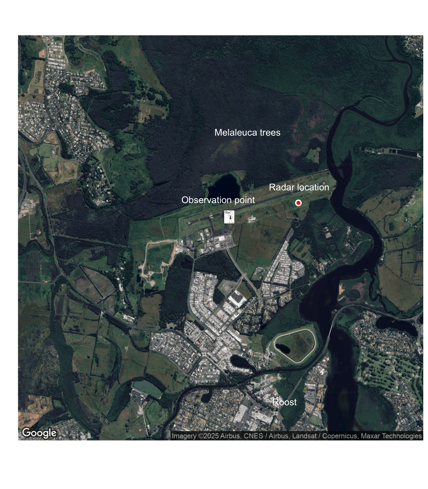
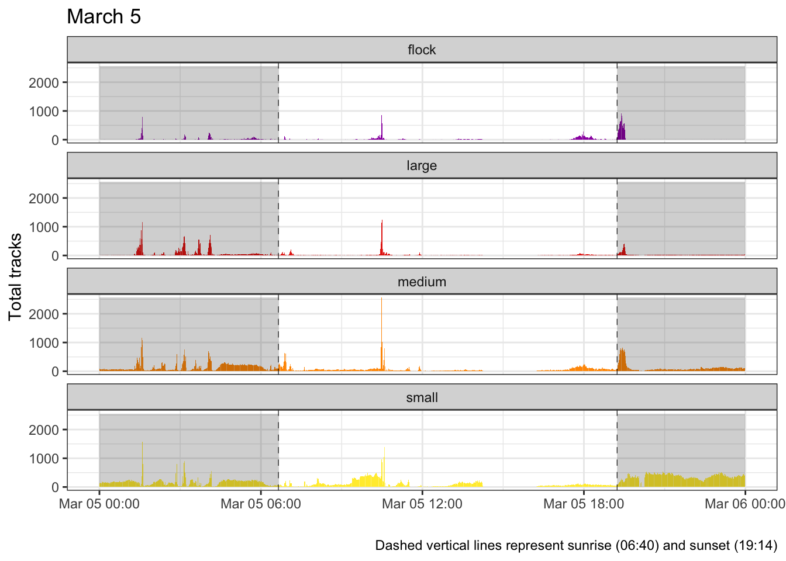
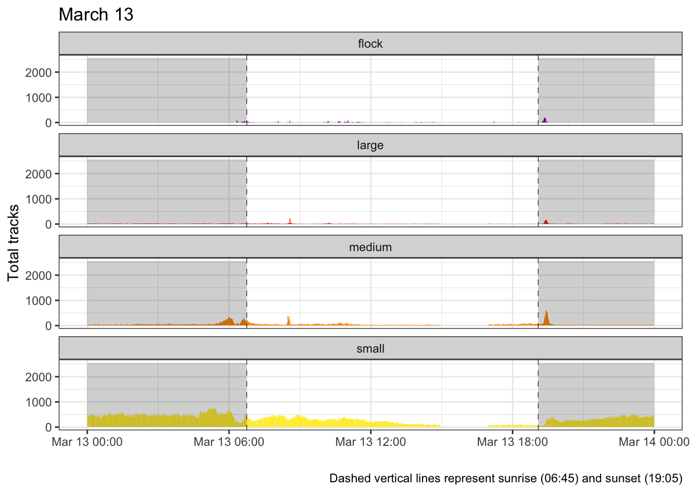

Comparing Flyout Counts with Radar Observations
Flyout Count Basics
Observations are generally made from the airport tarmac (Ballina) but there are collected from a few other locations.
Generally a total count is calculated along with starting and ending times.
For radar observations associated with observations made at the Ballina airport, radar tracks filtered to only include those intersection the airport boundary and moving in a Northerly direction (departing the roost).
March 5: Ballina
- Transit start 17:23
- Transit “finish” 18:32
- Last light 19:37:00
- Number of flying fox observed 9976

- Note: this was an interesting night with a “double flyout”

March 13: Ballina
- Transit start 19:11
- Transit finish 19:51
- Last light 19:38:00
- Number of flying fox observed 2134
- 5 minute Counts:
- 19:16 \(\rightarrow\) 76
- 19:21 \(\rightarrow\) 130
- 19:26 \(\rightarrow\) 1150
- 19:31 \(\rightarrow\) 520
- 19:36 \(\rightarrow\) 140
- 19:41 \(\rightarrow\) 80
- 19:46 \(\rightarrow\) 30
- 19:51 \(\rightarrow\) 8
| five_min | n |
|---|---|
| 19:16 | 23 |
| 19:21 | 215 |
| 19:26 | 1033 |
| 19:31 | 1516 |
| 19:36 | 672 |
| 19:41 | 465 |
| 19:46 | 447 |
| 19:51 | 222 |
| five_min | classification_id | n |
|---|---|---|
| 19:16 | 6 | 3 |
| 19:16 | 7 | 3 |
| 19:16 | 8 | 17 |
| 19:21 | 5 | 94 |
| 19:21 | 6 | 35 |
| 19:21 | 7 | 62 |
| 19:21 | 8 | 24 |
| 19:26 | 5 | 354 |
| 19:26 | 6 | 235 |
| 19:26 | 7 | 308 |
| 19:26 | 8 | 136 |
| 19:31 | 5 | 95 |
| 19:31 | 6 | 205 |
| 19:31 | 7 | 664 |
| 19:31 | 8 | 552 |
| 19:36 | 5 | 3 |
| 19:36 | 6 | 25 |
| 19:36 | 7 | 241 |
| 19:36 | 8 | 403 |
| 19:41 | 5 | 1 |
| 19:41 | 6 | 4 |
| 19:41 | 7 | 106 |
| 19:41 | 8 | 354 |
| 19:46 | 5 | 5 |
| 19:46 | 6 | 10 |
| 19:46 | 7 | 71 |
| 19:46 | 8 | 361 |
| 19:51 | 6 | 8 |
| 19:51 | 7 | 31 |
| 19:51 | 8 | 183 |


April 22: Lismore
- Transit start 17:47
- Transit finish 18:08
- Last light 17:45:00
- Number of flying fox observed 1665
May 29: Ballina
- Transit start 17:30
- Transit finish 17:46
- Last light 17:20:00
- Number of flying fox observed 638
June 5: Lennox Head
- Transit start 17:23
- Transit finish 17:41
- Last light 17:21:00
- Number of flying fox observed 4775
June 17
- Transit start 18:33
- Transit finish 18:54
- Last light 17:30:00
- Number of flying fox observed 92
July 23
- Transit start 17:40
- Transit finish 18:00
- Last light 17:30:00
- Number of flying fox observed 620
August 28
Transit start NA
Transit finish NA
Last light 18:00:00
Number of flying fox observed 0
September 24
- Transit start NA
- Transit finish NA
- Last light 18:06:00
- Number of flying fox observed 0
October 15
- Transit start 19:00
- Transit finish 19:30
- Last light 19:15:00
- Number of flying fox observed 72
November 19
- Transit start 19:24
- Transit finish 19:40
- Last light 19:45:00
- Number of flying fox observed 440
December 16
- Transit start N/A
- Transit finish N/A
- Last light NA
- Number of flying fox observed 0